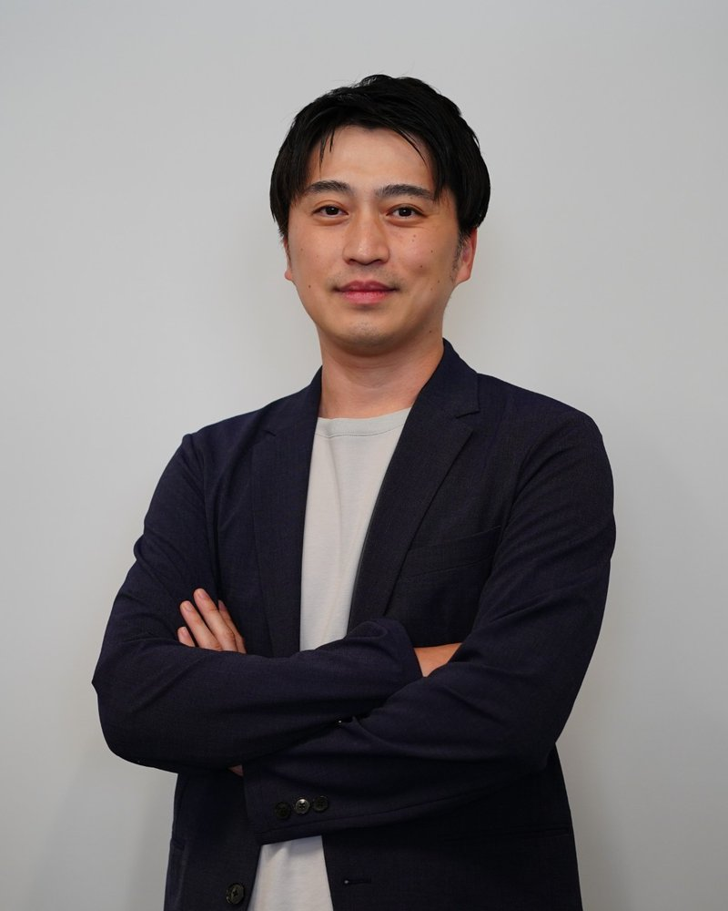
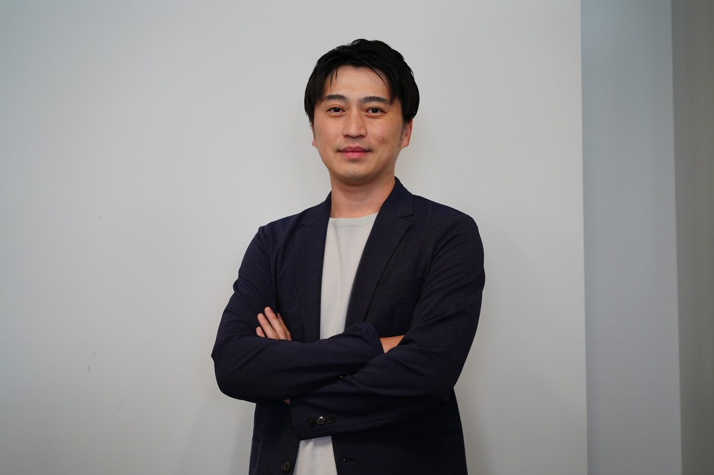

業務改善
あの人しか分からない業務
誰でも回せる仕組みに
業務を聞き取って一覧にし、担当者の偏りや、勘と経験で回っている判断を棚卸しします。手順書・判断基準、簡易ツール、業務の移管、システム化、生成AIの中から直し方を決め、担当者が替わっても回る状態まで一緒に進めます。
成果物
- 業務一覧と棚卸しの結果
- いまと直した後の業務フロー
- 直す順番と効果の見込み
- 手順書・判断基準・簡易ツール
この業務、AIで効率化できますか？
いちばん多いのは、この相談です。ほかにも、次のような状態で相談を受けています。
業務を聞き取って一覧にし、担当者の偏りや、勘と経験で回っている判断を棚卸しします。手順書・判断基準、簡易ツール、業務の移管、システム化、生成AIの中から直し方を決め、担当者が替わっても回る状態まで一緒に進めます。
成果物
まず対象部門の業務課題を整理し、どの業務に、何のために生成AIを使うかを決めます。試行（PoC）の合格ラインを先に決めてから試し、部門ごとの展開、使い方と運用ルールの整備、使われ方の確認まで支援します。使われていない部門は、原因が業務・ツール・ルールのどこにあるかを切り分けて手を打ちます。
成果物
発注の前には、要件と見積を突き合わせて抜け・過剰を指摘し、ベンダーへの質問リストを作ります。発注の後は、御社の側に立ってPM・PMOとして計画・課題・進捗を管理し、ベンダーの成果物をレビューします。進行中のプロジェクトの状態確認も行います。
成果物
テーマと期間を決め、現場・ベンダーと一緒に手を動かして前に進めます。基本はこの形です。
範囲を絞って調べ、判断材料をレポートにまとめます（例: IT見積・提案の見極め、どの業務から手を付けるかの判断）。
支援の後に、定例と随時の相談で、判断とレビューを続けます。
費用は、内容と期間に応じて見積もります。
携帯キャリアの社内システムの運用・保守から始め、要件定義からリリース後のフォローまで、発注する側の立場でシステムを動かしてきました。その後の外資系総合コンサルティングファームと独立後の仕事も含め、これまで11業界の業務改善とシステム導入に携わっています。業界が違っても、業務を整理して改善するときの要点は変わりません。
直近の2年は、石油元売りの情報システム部門の支援として、知財・人事・経理・コールセンターなど複数部門への生成AI導入に携わりました。業務課題の整理から試行（PoC）、導入までを支援し、展開先の大半で業務への定着まで到達しています。
発注者側ではPMやPMの支援役として、ベンダー側ではPMやPMOの支援役として、システムのプロジェクトに携わってきました。ほぼすべての案件でベンダーの管理と成果物のレビューを担い、御社の側でも確認できる道筋を作るのが進め方の特徴です。
代表が個人で営むワイン事業と、当社のコンサルティング業務の運営を、生成AIのエージェントで動かしています。相談の場で、その構成と画面を実際に見せます。

AIエージェント（コンサル業務の体制）
どの領域でも、業務を見るところから始めます。
いま抱えている困りごとと判断を聞き、どの支援が要るか（あるいは要らないか）、社内で進められるかを一緒に判断します。
範囲・期間・関わり方を決め、見積を出します。秘密保持契約が必要な場合は、この段階で結びます。
現場と管理部門に話を聞き、業務の流れと課題を整理します。生成AIを使う業務も、IT投資の論点も、ここで決めます。
手順書やツール、生成AIの試行と導入、PM・PMOとしてのプロジェクト推進を、現場やベンダーと一緒に進めます。
担当者が替わっても回るか、AIが使われているかを確かめ、社内で続けるための手順と判断基準を残します。判断が続く場合は、月額顧問で続けます。
スポット診断は、STEP 3 の結果と次の進め方の案をレポートにまとめます。
石油元売り
生成AI導入
情報システム部門を支援し、知財・人事・経理・コールセンターなど複数部門への生成AIの業務導入を2年にわたって支援。業務課題の整理から、ツールを小さく試す段階（PoC）、導入までを支援しました。
展開先の大半で、生成AIの活用が業務に定着しました。
賃貸保証会社
IT推進（PM・PMO）
2024年5月、業務システムの刷新が行き詰まった状態で、IT顧問として参画し、プロジェクトのリーダーを務めました（2025年9月まで）。社内で手薄だった開発のPM・PMOを補い、クライアントとベンダーの双方から状況を聞き取って問題を整理したうえで、ベンダーを再選定し、プロジェクトを仕切り直しました。
仕切り直しの過程で必要な機能と費用の全体像をつかみ、開発に必要な機能が膨大で、当初の予算に収まらないことが分かりました。システムは稼働には至りませんでした。この経験から、必要な機能と費用の全体像は早い段階でつかむべきだと考えています。IT見積・提案の見極めは、この経験をもとにしています。
電力会社
業務改善
電力小売の自由化の開始後、システムエラーが数十万件単位で発生し、その解消に取り組みました。エラーのデータを分析して原因を特定し、原因ごとに復旧の方法を決めて実施しました。分析用のExcelツールと事象ごとの手順書を作り、担当者が誰でも復旧作業を行える環境を整えました。
チームで、数十万件のエラーを最後まで解消しました。

社会人の出発点は、携帯キャリアの社内システムでした。運用・保守から始め、開発の取りまとめまで、発注する側の立場でベンダーと一緒にシステムを動かしてきました。その後の外資系総合コンサルティングファーム、独立後の仕事を含め、これまで11の業界の業務改善とシステム導入に携わってきました。
業界が違っても、業務を整理して改善するときの要点は変わりません。いまの業務を見て、どこに手を入れるかを決める。生成AIも同じで、どの業務に、何のために使うかを決めてから入れます。行き詰まったシステム刷新に加わった経験からは、必要な機能と費用の全体像は早い段階でつかむべきだと考えるようになりました。
ITに詳しくない方にも、専門用語に頼らずに説明し、社内で判断できる状態をつくりながら進めます。依頼された範囲にとどまらず、その外で気づいたことも、こちらから提案します。
代表社員 金村 進介
代表社員 金村 進介（かねむら しんすけ）
業務改善 × 生成AI の ITコンサルタント
SKY合同会社 代表社員。業務改善 × 生成AI の ITコンサルタントです。自分の事業もAIエージェントで動かしています。石油元売りの情報システム部門で、知財・人事・経理・コールセンターなどへの生成AI導入を2年支援し、展開先の大半で定着まで到達しました。外資系総合コンサルティングファームなどで、通信・電力・鉄道・製薬など11業界の業務改善とシステム導入に携わってきました。まず業務を見て、その後にAIを入れる。この順番で一緒に進めます。
業務改善 × 生成AI ｜ IT推進（PM・PMO）
| 社名 | SKY合同会社 |
|---|---|
| 設立 | 2022年1月 |
| 代表者 | 代表社員 金村 進介 |
| 事業内容 | 業務改善・生成AI導入・IT推進（PM・PMO）のコンサルティング |
| 適格請求書発行事業者 登録番号 | T3011803004951 |
| 連絡先 | shinsuke.kanemura@skyconsulting.co.jp |
いま抱えている判断を1つお持ちください。「この業務、AIで効率化できますか？」「この見積は妥当か」「このプロジェクトは順調か」など、テーマは問いません。
どの支援が要るか（あるいは要らないか）、社内で進められるかを一緒に判断します。売り込みの場にはしません。
shinsuke.kanemura@skyconsulting.co.jp